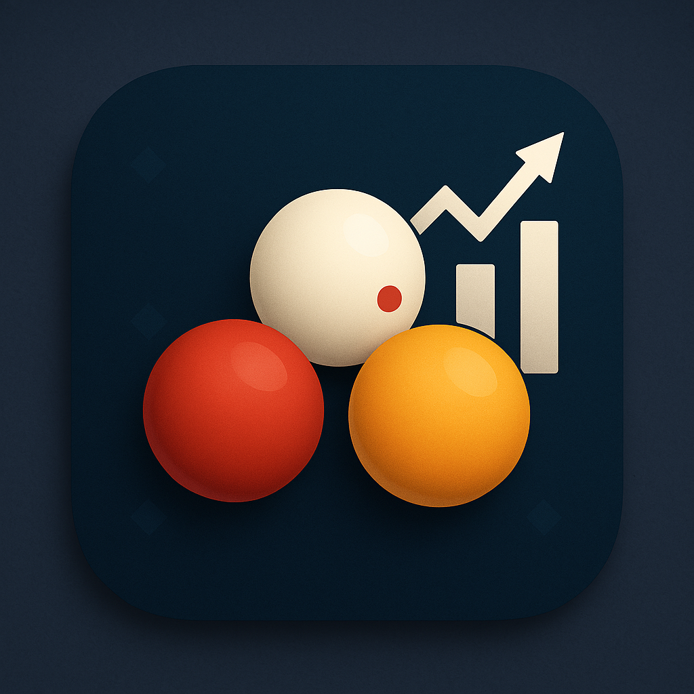

Nieuwe focus in 2026
Billiard Software
Billiard Software maakt handige software voor biljartclubs en spelers.
✨ CaromStats - Moderne Mobiele App

Nieuw in 2026! CaromStats is onze moderne mobiele app voor iOS en Android. Hou je biljartresultaten en statistieken eenvoudig bij, met slimme grafieken, cloudback-up en offline gebruik.
Belangrijkste voordelen:
- 📱 iOS en Android - Gebruik 'm op je smartphone of tablet
- 🔄 Actief onderhouden - Regelmatige updates en nieuwe functies
- 📊 Geavanceerde statistieken en grafieken - Zie meteen hoe je speelt
- ☁️ Cloudback-up - Synchroniseer makkelijk tussen apparaten
- 📴 Offline werking - Werkt zonder internetverbinding
- 🌐 Meertalig - Nederlands, Frans en Engels
🏆 NIDM - Competitiesite
NIDM is de website voor de nationale driebanden interclub met standen, teams, wedstrijden en resultaten op een centrale plaats.
- Live competitie-overzicht per afdeling
- Wedstrijdresultaten en spelersdetails
- Aparte handleiding voor teamverantwoordelijken
Alle Software
Legacy Software voor Clubs (Niet meer onderhouden)
BilliardScore en BilliardAdmin zijn volledig GRATIS te downloaden en te gebruiken zonder licentiekosten.
BilliardScore en BilliardAdmin worden niet meer actief onderhouden, maar je kan ze nog altijd blijven gebruiken.
BilliardScore - Front Office
Windows scorebord software voor clubs. Meer info →
BilliardAdmin - Back Office 
Software voor competitiebeheer en administratie. Meer info →
Downloads
Klaar om te starten?
CaromStats: Nu beschikbaar in de Apple App Store. Android volgt binnenkort in de Google Play Store.
Legacy software voor Windows:
- BilliardScore for Windows (versie 3.5)
- BilliardAdmin for Windows (versie 2.3)
Hulp & Ondersteuning
Sneller op weg met de juiste hulp
Bekijk onze videotutorials als je snel op weg wilt, of stuur ons een bericht voor extra hulp.